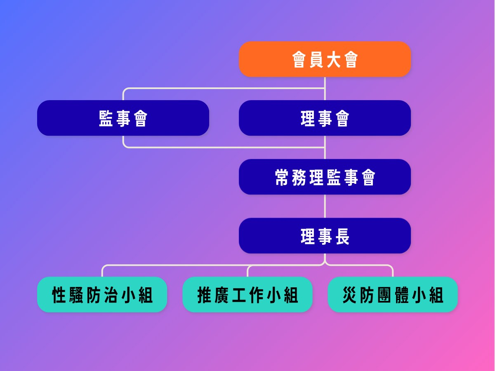
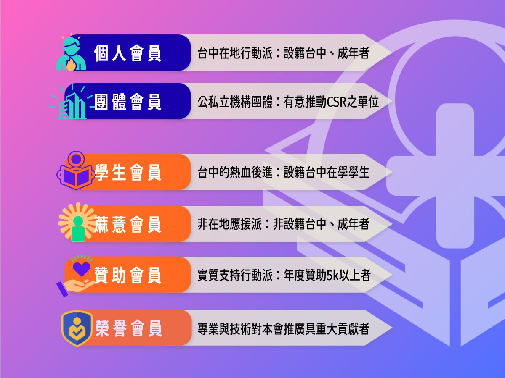

臺中在地民間防災團體，推廣自救互救、培訓韌性公民。
我們是臺中的民防團體，致力於推廣基礎救護、體能訓練、與防災教育。我們相信，每位公民都應具備基本的自救能力，這不僅是成熟公民的責任，更是對生命負責的態度。2023 年以臺中自訓團起步，2024 年完成政府立案，正式成立社團法人，持續推廣防災、救護技能與自救互助理念。
臺灣處於天災頻繁與地緣政治敏感的環境，我們致力於提升人民在災難中的應變能力，幫助大家學會在危機中保持冷靜、有序，進而維持社會的穩定。

